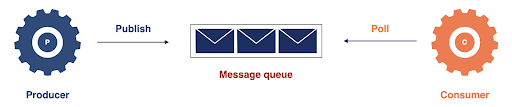
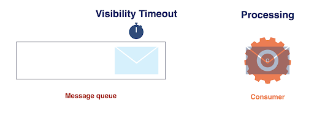

An open-source Dead-Letter Queue-as-a-Service
for distributed applications
deployed on an AWS infrastructure.
Easy to Manage & Deploy
Easy to Manage & Deploy
Ekko abstracts away the complexity of working with cloud
infrastructure by automating the deployment process.
Modular and Flexible
Modular and Flexible
Ekko Functions are serverless functions that can be customized for
your realtime needs and reused across applications.
Case Study
1. Introduction
1.1 Microservices
When building a new application, a monolithic architecture is often
chosen for the initial build. A monolithic application consists of one
large codebase that includes all of the application components. It is
deployed as a single package and it runs in a single process. While there
are many benefits to structuring an application this way, there are also
some significant drawbacks. For example, any modifications to the codebase
necessitates the deployment of a rebuilt application. Additionally, if any
parts of the application need to be scaled up, the entire application will
need to be scaled. These drawbacks of the monolithic architectural style have
led to the popularity of microservices architecture where the codebase is split
into several functional units of code. Each unit represents a service and it is
independent of the other services in that it can be deployed and scaled separately.
The microservices architecture also gives each service the flexibility to use the
programming language and data storage system that are most suitable for its function.
(Ref: https://martinfowler.com/articles/microservices.html)
Using microservices architecture however does increase the complexity of communication
within the application. While a monolithic application can use method/function invocations
for communication between different parts of the application, the distributed nature of
microservices calls for a different approach.
1.2 Microservices Communication
Microservices can communicate synchronously via HTTP request/response cycles. However,
to maximize the benefits of the decoupling nature of the microservices architecture,
asynchronous communication can be used. One of the ways to implement asynchronous
communication between microservices is to use a message queue that sits between the
services. A message is the data transported between the sender service and the receiver
service. The message queue holds the messages that are waiting to be processed by the
receiver service. The service that adds messages to the queue is called a producer and
the service that receives messages from the queue is called a consumer.
One of the main benefits of placing a message queue in between two services is that the
services can be decoupled, that is, the processing of a message on the consumer side becomes
independent from the production of the message on the producer side. The producer does not
need any acknowledgement from the consumer, the producer’s only concern is to get the message
delivered to the queue which handles the message from that point onwards. This adds more
resilience to the entire system in that if the consumer fails for some reason, the producer
is not affected. The producer can continue to add messages to the queue which will get
processed when the consumer recovers from the failure.

1.3 Queues
There are multiple options available for developers in need of a message queue system.
Some open-source options include RabbitMQ, Apache ActiveMQ, and Apache Kafka whereas
IBM MQ and AWS SQS are proprietary systems. There are some differences in the way these
message queues are implemented and how they operate, but in general, they all provide a
way to temporarily store messages as well as an interface that allows producers and
consumers to connect to the queue.
A widely used cloud-based option, AWS Simple Queue Service (SQS) is a fully managed
messaging service that provides unlimited storage of messages, high availability,
and data encryption. An SQS queue is a distributed messaging system, meaning that
the queue is distributed over several AWS servers to allow for redundant storage of
the messages within the queue. Due to this distributed nature, standard SQS queues
support at-least-once delivery, best-effort ordering of messages, and a nearly unlimited
number of API calls/sec. A standard queue would be a good option for an application that
doesn’t require strict ordering of messages and can handle the deduplication of messages
within the application code.
1.4 Standard SQS Message Handling
When a message is sent to a standard SQS queue, it is serialized into JSON format.
The message must include a message body and can optionally include up to 10 user-defined
message attributes that provide additional metadata about the message content or purpose.
Once the message is received by the queue, it will be assigned a unique identifier and the
queue will keep track of important metrics for the message. One example is the Receive count,
which increases every time a consumer attempts to process the message. The queue also keeps
track of the Message retention period which determines how long a message can stay in the
queue. If the message has not been successfully consumed by the end of this period,
it will be deleted from the queue.
For a consumer to receive a message stored in a queue, the consumer must first poll the queue
to probe for available messages. If a message is available, the consumer will attempt to process
the message. During this time, the message stays in the queue but remains hidden from all
consumers for a set amount of time. This Visibility Timeout should allow the consumer enough
time to fully process the message and send a response to the queue if it is successful. If the
queue receives the response from the consumer, it deletes the message from the queue. If no
response has been received by the queue when the Visibility Timeout expires, the message becomes
visible again to all consumers.

An issue may arise when the consumer takes longer to process the message than the Visibility
timeout is set for. In that case, even if the consumer eventually completes processing the
message, the message has already been made visible again in the queue, potentially leading
to multiple processing of the same message. In this case, it would be important for the
consumer application code to handle the deduplication of messages.
1.5 Message failure
There are several reasons why a message could fail to be consumed. For one, since the consumer
must communicate with the queue over a network, any network errors could lead to message failure.
Other consumer-related failures might be due to a consumer dependency, for example, if the data
store the consumer depends on has an outage. These types of failures are temporary and once the
failure has been repaired, the message should be able to be processed by the consumer.
Other failures are due to more permanent errors such as an invalid message format or a bug in the
consumer application code that leads to the inability to process a valid message. These errors lead
to what has been called a “poison message”. After every failed attempt to process the message, it becomes
visible again in the queue and the consumer is bound to retry processing it. While the poison message
stays in the queue, it wastes resources on retries that will never be successful. This cycle continues
until the Message Retention Period expires for the message.
2. Use Case
2.1 BuyMe
So what does this all mean in the real engineering world? Let’s look at the fictional company BuyMe.
BuyMe is a young but growing e-commerce business. Recently, the engineering team advised the
higher-ups that the business application would benefit greatly in terms of organization, reliability,
and speed by adopting a microservices architecture instead of the current monolith. One part of this
transition is the placement of queues for between-service communication to keep the services as
decoupled as possible. For the company to work well and processes to run smoothly, the service that
receives the orders must be able to forward the details of these to the stock inventory service. The
communication between the two services should be able to accommodate a growing company, allowing for
high throughput. However, the messages do not need to be delivered in the same order to the inventory
service that they came into the ordering service. For these reasons, the BuyMe team decided that an
AWS standard SQS queue would be a good choice for the job.
Any live data dashboards, such as stock prices ticking up and down
on a website, are examples of realtime web applications. The same
applies if you open the Uber app and you see your driver’s car
location moving around on the screen, or to simple chat applications
where you’re talking back and forth and you see messages as soon as
they’re sent to you.
These are all very common examples of realtime applications that we
see and use every day. In short, users want to automatically get
information updates (like messages or geo-locations) without
requesting those updates. We see more dynamic and responsive
applications being created with the use of these realtime
technologies, and alongside that we see application users
increasingly expecting realtime data.
After an extended period of testing and development, the transition was
completed and the company confidently moved its new AWS architecture into production.
2.2 Flooded Message Queue
Soon after, though, customer service tells the engineering team that they are receiving
complaints about orders not being fulfilled. When the team checks the queue between the
ordering and inventory services, there seem to be many more messages than they would
expect to see. They discover that a considerable number of messages still in the queue
should have been processed by the inventory service already.
They could just delete the unprocessed messages but that would mean orders would go
unfulfilled causing customer dissatisfaction and profit loss. To try to alleviate the
issue and find out what could be causing it, they decide it is time to add a Dead Letter Queue.
3. Dead-Letter Queues (DLQs)
3.1 What is a dead-letter queue?
A dead-letter queue (DLQ) is “a queue to which a source queue can send messages if the main
queue’s consumer application is unable to consume the messages successfully”. In other words,
we can think of a DLQ as a backup queue that captures all messages that fail to be processed
from the main queue by the consumer application. Configuring a DLQ ensures that unprocessable
messages will not remain in the queue and no messages will be lost during communication between
services.
3.2 How is a DLQ configured?
When configuring a DLQ, it is imperative to specify the conditions under which the main queue
moves messages to the DLQ.
As mentioned earlier, the main queue keeps track of important metrics for each message. One of
these is the Maximum receives count which is set by the user and represents the maximum number
of times that a consumer can try to process a message. When the Maximum receives count is exceeded
for a message, the message is moved from the main queue to the DLQ.
The appropriate value for the Maximum receives setting depends on the user’s message processing
requirements and can affect the efficiency of the main queue. Setting the number to a low value
such as 1 would mean that a single failure to process the message by the consumer will cause the
main queue to move the message to the DLQ. This policy doesn’t allow for any processing retries by
the consumer and might prematurely send a message to the DLQ which could have been successfully
consumed with a further reattempt. Setting the number to a high value such as 20 keeps the message
in the main queue and enables the consumer to retry processing it multiple times. Although this
might initially seem like a good idea, imagine there being hundreds of messages queued to be retried
by the consumer at a rate of 20 attempts each! Having such a large number of messages that the
consumer repeatedly fails to process and delete from the main queue might increase costs and place
an extra load on the hardware. Moving failing messages to a DLQ after just a few processing attempts
would allow the consumer enough chances to retry processing a message and would also avoid blocking
the queue for a significant amount of time.
3.3 Importance of DLQs
When a messaging system lies at the heart of application architecture, the DLQ is a crucial part of
a coherent plan for dealing with messages that fail to be processed by the consumer application.
Several key factors contribute to the importance of a DLQ. Firstly, it helps manage the lifecycle of
unconsumed messages which is a workflow of possible paths that a failed message can take. It starts
with publishing the message, retrying to process it in case of temporary failure on the side of the
consumer, having a named location for unprocessed messages to go to, and providing options for handling
these failed messages. In addition, a DLQ provides debugging capabilities. By offering a peek into
messages, their content can be analyzed to diagnose application issues that might need to be addressed
centrally. With the provision of a DLQ, failed messages always have a place to be stored minimizing data
loss. Ultimately, a DLQ isolates unconsumed messages to help users determine why their processing didn’t
succeed. It is a source of error-handling strategies ranging from simple reprocessing of messages by
the main queue to advanced analytics of message data for real-time insights.
3.4 The AWS DLQb
Now that our engineering team at BuyMe has the DLQ in place and can view the poison messages, they are
ready to start debugging the problem. To begin with, they would like to examine the failed messages in
the DLQ. They head over to the AWS SQS console to take a look.
In the console, they are met with some obstacles. One issue has to do with what is referred to as the
Message retention period. The Message retention period dictates the lifetime for each message that enters
a queue. This number will not get reset when a message is sent to a DLQ but continues to count down from
the time it was sent to the main queue. When this period expires, the message will be permanently deleted
from the DLQ. This is a red flag for the BuyMe team as they do not want any orders to get deleted before
they are properly fulfilled!
Another issue is that the entire list of messages is not immediately available for viewing. Instead, the
BuyMe team discovers that they must manually poll for it. While the team can change the polling settings
for the DLQ, depending on these settings, they still might not be able to see all the messages with each
polling attempt, as only a random subset of them is fetched. Once a message has been fetched, they can
inspect the message body and attributes.
A first look makes the BuyMe engineers suspect that the messages are failing due to character-encoding
errors in the SKU number. To debug this issue, they would ideally like to manually modify each problematic
message and re-drive it to the main queue to see if the changes allow the message to be successfully processed
by the inventory service. Although the console provides re-drive functionality - the team would be able to
send messages from the DLQ back to the main queue so the consumer can retry processing them - it does not
offer the option to modify the messages before the re-drive. Even if they were able to modify the messages,
the AWS SQS console only allows batch re-drive and not individual message re-drive.
The BuyMe engineers realize that the limited built-in functionality of the AWS DLQ does not meet their
requirements. They require a tool that will allow them to view all messages in the DLQ, both as a list and
individually, as well as allow them to edit and re-drive individual messages back to the main queue. They
presume that such a tool must exist and start their search for it.
4. Existing solutions
4.1 SaaS and open-source
It becomes apparent to the team at BuyMe that they are not the only ones frustrated by the limitations of
built-in DLQ functionality. There are several tools available for making it handy to monitor dead-lettered
messages in testing, development, and production environments. A leading platform in this area is Serverless
360, a service rich in features that fulfill a large number of requirements:
Easy viewing of messages
Search options for filtering
Accessing the reason for message failure
Operating on both individual messages and batches
Modifying, deleting, and redriving messages
Setting a timer for particular operations
While other solutions such as Cerebrata, Cogin, and Service Bus Explorer do not have the full range of features
that Serverless 360 offers, they do check the boxes that our team at BuyMe is interested in. However, 3 of the
4 tools are only available for purchase and unfortunately, none of them is compatible with AWS.
There are also self-deployable options for realtime infrastructure
which accordingly offer more control, albeit at the potential
expense of more configuration and deployment issues.
The BuyMe team is in a bit of a bind. Currently, they are restricted by the offerings of the AWS DLQ but can’t make
use of any of the available DLQ monitoring tools discussed above, missing out on extensive functionality.
So what options does the team at BuyMe have when they discover that a message has failed to be processed and
has been moved to the AWS DLQ? Currently, they are restricted by the offerings of the AWS DLQ and can’t make
use of any of the available DLQ monitoring tools we discussed above, missing out on extensive functionality.
This is where Kuri comes in.
5. Kuri
5.1 Introducing Kuri
Kuri is an open-source, Dead-Letter Queue-as-a-Service for small distributed applications that use AWS
infrastructure. When we compare Kuri with the functionality of the AWS DLQ and the capabilities of the existing
monitoring tools, Kuri meets the majority of the requirements and is compatible with AWS queues.
Aside from being open-source, there are many reasons why Kuri would be a great tool for the BuyMe team.
First, by providing just a handful of responses to command line questions posed by Kuri, a pipeline incorporating
the main queue and DLQ will be set up for them. They even have the option of setting up both from scratch or
providing the details of an existing main queue and letting Kuri set up a DLQ on their behalf.
The user is required to complete three steps to use Kuri - install the Kuri package, deploy it and view the
dashboard. Within a couple of minutes, Kuri is configured and ready to use!
Finally, the easy-to-use Kuri dashboard will provide them with the ability to:
Access the messages without the need for polling
Sort messages based on their timestamp or body text
Modify the body and attributes of individual messages
Delete and re-drive individual messages or perform batch delete and re-drive operations
5.2 Kuri installation
There are three steps our team at BuyMe will take to install and use Kuri. The first step is to install
the NPM package globally. It was our goal from the beginning of the project to make the installation of Kuri
as seamless as possible. The BuyMe team will not need to manually update configuration files or make any adjustments
once the set-up is complete.
Once installation is finished, the commands available in the Kuri package can be pulled up, which currently are the
`deploy` and `view` commands.
When deploying the application, our team at BuyMe will choose for Kuri to create a DLQ only as they already have
the main queue. They’ll provide its URL and their AWS region and instruct Kuri to send notifications to their Slack
channel. Finally, they’ll confirm the configuration options and Kuri will be deployed through the provision of the
various AWS resources.
And that’s it, Kuri is deployed, leaving them with the final step of viewing and interacting with the Kuri dashboard.
5.3 Kuri dashboard
When opening the dashboard, the team can first see a summary of the current state of the DLQ at the top left corner.
Each message with its id, timestamp, and body is displayed in a table format. There is functionality available for
sorting and viewing the messages according to the message timestamp and body.
They can also re-drive all the messages back to the main queue for one more attempt at processing by the consumer. If
the attempt is unsuccessful, the messages will reappear in the DLQ.
For individual messages, the BuyMe team has several options through the action dropdown. They can view the message
details which include the id, timestamp, body, and some optional user-provided properties. If required, they can
permanently delete the message from the queue.
They can also edit the message and save the updated version back in the DLQ. Most importantly, after editing the
message they have the option to re-drive the message back to the main queue so that the consumer can retry processing it.
Finally, they can batch-delete the messages if they do not need to perform any further processing.
We’ve explored the requirements of the BuyMe team that Kuri satisfies and how they can use it. Now it’s
time to take a deep dive into how we built Kuri.
6. Architecture and Implementationo
6.1 Kuri Architecture & Implementation
The Kuri architecture can be viewed as several high-level components that handle different responsibilities in
the management of dead-lettered messages as seen in figure 6.1. Throughout the next few sections, we will break
down each high-level component into the AWS resources that make up the component. We will discuss the relationship
between those resources and how they function together to fulfill the responsibilities of the component.
6.2 Inter-Service Communication
The Inter-Service Communication component consists of 3 resources: the user’s producer and consumer flanking an
AWS SQS Queue. The queue serves to handle communication between the producer and consumer.
6.2.1 Producers & Consumers
The producer can be any service within a distributed system or microservices architecture that needs to communicate
with other services for asynchronous tasks. The asynchronous communication allows for time-consuming and non-urgent
tasks to be handled in the background and can decrease user response time.
On the other hand, the consumer can be any service that needs to access messages from a producer service. It’s
important to note that the consumer can only access messages that it has been granted permission for.
6.2.2 Simple Queue Service (SQS)
The producers and consumers are connected by an SQS queue which is a fully managed messaging queue service that
enables the user to decouple and scale microservices, distributed systems, and serverless applications.
AWS offers two types of SQS queues. As mentioned earlier, the standard SQS queue provides maximum
throughput, best effort-ordering, and at-least-once message delivery. This means that messages can
be provided to the queue at a faster rate, the order is not a priority, and the delivery of duplicate
messages may occur. In addition to the standard queue, AWS also offers a First-in-first-out (FIFO)
queue that is designed to guarantee that messages are processed exactly once in the exact order
that they are sent to the queue. The guarantees of FIFO queues come with the tradeoff that they
support a much-limited throughput compared to a standard queue.
We decided to build Kuri to serve a user with a need for a standard SQS queue. A typical Kuri user would
require a queue that can handle high levels of message volume and a robust dead-letter management tool.
On the other hand, a user that has opted for a FIFO queue is likely to need exact ordering of messages and
therefore unlikely to need the re-drive functionality provided by Kuri.
At this point in our infrastructure, messages will be sent from the producer to the queue, the consumer will
poll for messages and try to process them. But what if messages are failing to be consumed?
6.3 Failed Message Handling
This brings us to the next component in our infrastructure, the Failed Message Handling Component. This
component consists of the Dead-letter Queue which is directly attached to the main queue.
6.3.1 Simple Queue Service Dead-Letter Queue
As mentioned earlier the AWS-provided Simple Queue Service DLQ is designed to capture messages that
cannot be processed or consumed successfully by the consumer service. When Kuri is configured it provides
the DLQ that will be automatically configured to the user's main queue. This is done by creating an SQS
Queue, setting it as a DLQ, and providing it the AWS Resource Name of the main queue.
Kuri has two different queue configuration options available for developers. The first option is the “Main
Queue and DLQ” option - where the developer configures Kuri to provide a brand new AWS queue and its DLQ.
This option is suitable for developers who are starting a new project or have an existing project that needs a
queue. The second queue configuration option is the “DLQ Only” option, suitable for developers who already
have a project with an existing queue and would like to add the Kuri DLQ to their infrastructure.
In terms of design decisions for the DLQ, we decided to use an SQS DLQ to collect failed messages since the
provided AWS DLQ performs this function very efficiently. The DLQ opens the message pipeline for the rest of
the Kuri infrastructure and allows Kuri to provide additional DLQ functionality.
At this point, the failed messages are being collected in the DLQ but what do we do with these messages? We
need some way of alerting the developer of these messages and providing them a way to interact with them and
possibly resubmit them to the main queue.
6.4 Fan-out
7. Using Ekko
There are four main parts to Ekko:
Ekko Server
Ekko Functions
Ekko CLI
Ekko Client
The Ekko Server manages realtime messages for applications with many
publishers and subscribers. It facilitates the processing of
realtime messages by invoking Ekko Functions.
Ekko Functions provide realtime middleware for in-transit message
processing. These functions are easy to create, update, and deploy
with the Ekko CLI tool. For complex workflows, developers can chain
multiple Ekko Functions together.
The Ekko CLI tool provides clear and simple commands that a
developer can use to manage Ekko Functions as well as spin up and
tear down the entire Ekko infrastructure.
Ekko Client enables developers to build realtime applications on top
of the Ekko Server. The Ekko Client exposes a handful of methods to
the developer, enabling clients to subscribe and unsubscribe to and
from channels, publish messages, and handle received messages.
7.1 Deploying Ekko
The Ekko Server infrastructure can easily be deployed to AWS by
running the ekko init command using the
Ekko CLI tool.
The Ekko CLI prompts for AWS credentials and uses those, along with
AWS’ Cloud Development Kit (CDK), to deploy the Ekko infrastructure
to AWS.
7.2 Ekko Infrastructure
This is the infrastructure deployed by ekko init.
The Ekko Server is a Node application deployed via container to AWS’
Elastic Container Service (ECS). The Application Load Balancer
distributes incoming WebSocket connections to the Ekko Server. We’ll
go into more detail on the importance of the S3 bucket and
ElastiCache instance in section 8.
7.3 Connecting an Application to Ekko Server
The Ekko Client is used to build realtime applications that make use
of the Ekko Server. Ekko Client can be
installed with npm
or imported via CDN.
Once Ekko Client is installed, it can be used to create a new Ekko
Client instance.
This Ekko Client Instance allows an application to connect, and send
realtime messages to the Ekko Server. Ekko Client takes a handful of
parameters including an app name, a host, a
JSON Web Token (JWT),
and an optional universally unique identifier (UUID). The app name
is the developers choice, and the host and JWT can be generated
using the Ekko CLI. The UUID is normally generated and passed in by
the developer. But, if a UUID is not passed to the Ekko Client
instance, Ekko Client will automatically generate one.
Retrieving the host and generating JWT values can be done by running
the ekko jwt command in the Ekko CLI.
The Ekko Server endpoint is retrieved by the CLI from a local
environment variable that is generated when the Ekko infrastructure
is deployed. This is the URL for the Application Load Balancer that
proxies WebSocket connections to the Ekko Server. Passing this value
as the host to the Ekko Client, enables it to connect and send
realtime messages to the Ekko Server.
The CLI tool generates JWTs using a secret that is generated when
the Ekko infrastructure is first deployed. Passing in an admin
token, instead of a user token, gives access to status events,
including connect, disconnect and error messages.
Once an Ekko Client instance has been created, it exposes several
methods that you can use to interact with the Ekko Server. With
these methods, the client can subscribe and unsubscribe from
channels, publish messages, and handle messages of different types.
This is what it looks like when we have two clients connected to the
Ekko Server, subscribed to the same channel, publishing messages on
it.
7.4 Deploying Ekko Functions
To process realtime messages in transit, Ekko Functions need to be
deployed to AWS Lambda. When the Ekko infrastructure is deployed
with the ekko init command, it creates an
ekko/ekko_functions directory locally. From this
directory, create, update,
deploy, and destroy commands can be run to
manage Ekko Functions.
Ekko Functions are created with a default file structure and format
so that they can be deployed to AWS Lambda. These functions can be
as simple as the example below, or a complex program with multiple
files. In this example, the demo-angry function exists in an
index.js file and simply takes the message payload,
capitalizes the text, and adds a few exclamation points.
Once Ekko Functions are created, they can easily be deployed to AWS
Lambda with the ekko deploy command. After Ekko
Functions have been deployed, the
associations.json file in the
ekko_functions directory needs to be manually updated.
associations.json informs the server what functions it
should use for processing messages published to a specific channel.
Once this file has been updated, the
ekko update associations.json command can be run which
stores the file on the S3 bucket mentioned earlier, and caches it on
the Ekko Server.
7.5 Transforming Messages in Realtime
After creating and deploying Ekko Functions, this is what the Ekko
infrastructure and message processing flow looks like:
Now, when a client sends a message on the Angry channel, the server
forwards that message on to the Angry Lambda for processing. The
Angry Lambda sends the processed message back to the Ekko Server
which then emits the message out to all subscribed clients on the
Angry channel. The same occurs on the other two channels. The server
knows which functions are associated with which channels using
associations.json.
If you want to teardown your Ekko infrastructure, you can do that
with the ekko teardown command. This will tear down
your Ekko Infrastructure and all Ekko Functions deployed to AWS
Lambda.
As you can see, deploying your own realtime infrastructure and
managing realtime middleware is easy to do with Ekko. You have now
seen what Ekko is and how it works. In the next section, we show
three areas where we faced challenges while building Ekko.
8. Engineering Challenges
We faced several engineering challenges when building Ekko: how to
authenticate clients connecting to our server, how to associate
individual Ekko Functions with specific realtime channels, and how
to scale the infrastructure.
8.1 Authenticating Clients
Once we created an Ekko Server to manage realtime communication and
an Ekko Client API that developers could use to build realtime
applications, we faced the problem of authentication. With the
current design, Ekko Clients send messages to the developer's Ekko
Server endpoint. But the problem with this is that anyone can send
messages to this public endpoint, including bad actors.
To validate Ekko Clients, we decided to use JSON Web Tokens (JWTs).
These are essentially API keys that can have a JSON object encoded
into it -- the data isn't private, but you can't change it without
breaking the API key. When the Ekko infrastructure is deployed, a
secret key is generated and stored as an environment variable on
Ekko Server and the CLI tool. When a developer runs the ekko jwt
command, the CLI tool uses the secret to generate app specific JWTs
that can be passed in to a new Ekko Client instance. The Ekko server
uses the same secret to authenticate JWTs and only allows clients
with a valid JWT to connect to it.
Since we can encode data into the JWT, we used it to specify if the
connecting client was an admin or a normal user, and what app they
were allowed to access. This gave us basic app- and role-level
security.
8.2 Ekko Function Management
Like PubNub and Ably, we decided to use serverless functions to run
our realtime middleware code. But, we still needed to figure out how
to coordinate message processing. How would Ekko Server know which
messages needed to be processed by which functions?
8.2.1 Linking Ekko Functions with Messages
Since clients publish and subscribe to channels, it made sense to
link specific channels with specific Ekko functions. So if you’re
making a chat app that uses a profanity filter, you can create a
channel and all messages published to that channel get processed
with the profanity filter middleware. All subscribers to that
channel will receive the processed message.
We created an associations.json file to store these
associations between channels and functions.
associations.json is organized by application. Each
application has an array of channels, and each of those channels
contain an array of Ekko Functions to be used for that channel. With
this file, the Ekko Server routes messages from a specific channel
to the Ekko Functions associated with that channel. Once processed,
messages are returned to the Ekko server and emitted to all
subscribed clients.
It’s worth noting that multiple functions can be chained together
and the Ekko Server will route messages to all of the functions, in
order, before emitting the processed message back out to
subscribers.
8.2.2 Storing associations.json
The associations.json file is stored in an S3 bucket
and the developer is responsible for updating it locally and then
uploading it with the Ekko CLI tool.
8.2.3 Updating associations.json
We opted to cache the associations data on the server since we want
to minimize the amount of time it takes to process messages. But we
needed to figure out how to update the server nodes when a change
was made to the JSON file.
We looked at two ways for pushing the data to the Ekko Server. The
first option was to use the AWS service CloudWatch to send a message
through Simple Notification Service (SNS), another AWS service,
every time the S3 bucket registered an upload event.
The second option was to update the Ekko Server directly at the same
time that we upload the new JSON file to the S3. This would involve
sending a PUT request to the Ekko Server with the JSON
object as the payload. We could just add this behind the scenes in
our CLI tool when the developer uses the
ekko update command. This was the option we chose since
it didn’t add any complexity to our infrastructure. The
associations.json file is sent as a JSON Web Token, and
the code for the PUT route on the server verifies it is
a valid token (in addition to decoding it and using that payload as
the new function-channel associations data.
8.3 Scaling Ekko
The final engineering challenge we needed to handle was around
scaling Ekko. We wanted the deployed infrastructure to be able to
scale up and down as needed. If there were more users connecting to
the realtime server, we needed to be able to support those
simultaneous connections, and if there was an increased volume of
messages passing through the server, we needed to be able to support
the speedy transmission of those messages as well as any
transformations or in-transit processing.
8.3.1 Deploying to AWS using CDK
Most of our scaling needs were handled by the choices we made when
deploying our infrastructure to AWS. We used AWS' Cloud Development
Toolkit (CDK) which synthesizes CloudFormation templates and then
deploys those constructs to AWS.
We didn't want to have to deploy our scalable infrastructure
manually, using the AWS web interface. Options available to us
included something platform agnostic like
Terraform or
the AWS homegrown equivalent,
CloudFormation
templates. CDK is a way to define those CloudFormation templates
using ordinary JavaScript code; it was appealing not to have to
handle the complexity of writing extremely long CloudFormation
templates from scratch and instead to define the infrastructure
'constructs' we wanted to provision.
8.3.2 Scaling the Ekko Server
The main part of Ekko that needed to be able to scale was the Ekko
server. We needed to support a flexible number of users connecting
to the realtime service as well as an increased volume of messages
being published.
In order to be able to scale flexibly, an attractive option for
horizontal scaling was to package up our server application as a
Docker container and then use AWS Fargate to scale those server
'tasks' up and down according to how taxed the particular task
instance became.
Fargate scales according to rules defined to account for how much
CPU and memory each container instance is using. We can specify
minimum and maximum boundary values to constrain how many containers
AWS can run. Fargate is not always completely transparent to use,
but it does handle our core problem of wanting to horizontally scale
our Ekko Server.
8.3.3 Establishing WebSocket Connections
Our next challenge came from the way our load balancer was routing
incoming connections and how that disrupted our need for persistent
WebSocket connections.
Socket.IO makes one request to set a connection ID, and a subsequent
upgrade request to establish the long lived WebSocket connection.
These two requests must go to the same backend process, but by
default our load balancer — AWS' Application Load Balancer — may
send the two requests to different Fargate container instances, so
the connection may not be successful.
When we first tried out Ekko on AWS infrastructure we could not
establish WebSocket connections for this reason.
The fix for this was to enable sticky sessions as a policy for our
Fargate task definition. We updated our CDK code to specify this
sticky property. Now each Ekko client gets routed to the same server
instance to which it was initially assigned and WebSocket
connections work as they should.
8.3.4 Scaling WebSocket Connections
Once our infrastructure was deployed, we wanted to make sure our
original server code continued to function as designed. Scaling to
multiple instances of the Ekko server presented an immediate
problem: how would all server instances know which messages were
being published on the various other instances?
This animation illustrates the problem of scaling WebSockets:
If we have two instances of the Ekko server, the load balancer is
going to connect one user to server instance A and the other to
server instance B. In this scenario, they are both subscribed to the
same channel so that they can chat with each other. Alice has a
WebSocket connection to server A and when she publishes her message,
server A receives it and publishes that message to the channel so
that all subscribers will receive it. However, only the WebSockets
connected with server A will get that message, so Bob won’t receive
it since he’s connected to server B.
In order to solve this problem, we used the Socket.IO Redis adapter
library. This library uses a Redis instance to broadcast events to
all of the Socket.IO server nodes.
Alice’s message, published to server node A, is automatically
published to server node B and emitted out to all subscribers.
8.3.5 Syncing Associations Data
A final engineering challenge we encountered was figuring out how to
synchronise state between all our Ekko Server instances.
Specifically, we needed to ensure that all server instances had the
latest version of the associations.json data (which pairs channels
with the Ekko Functions that will execute on all associated messages
passing through).
When updates are made to the associations.json file, we
use the CLI tool to upload these updates to the S3 bucket for
storage. We also let the Ekko Server know by sending a
PUT request with the new associations data as the
payload. In this way, the current server uses the data sent via the
PUT request, and new server instances spinning up will
use the latest version of the associations data in the S3 bucket.
However, we had a problem. The request will be routed to just one of
the Ekko Server instances. We need to be able to notify all of the
Ekko Server instances with the updated data. As you can see from the
animation, our PUT request does update one of our
server container instances, but this update isn't shared with the
others.
Our solution to this was to use the standard Redis package. The
server that receives the message publishes the file to the Redis /
ElastiCache cluster, and all the other server instances in turn are
subscribed to the Redis cluster and receive a copy of the new
associations data. This allowed us to keep our server instances
synchronised.
Solving these various engineering challenges allowed us to build
Ekko out such that it was working as we hoped, and it was also able
to scale. At this point, we wanted to make sure that the service as
a whole could function under realistic use loads.
Presentation
Meet our team
We are currently looking for opportunities. If you liked what you
saw and want to talk more, please reach out!